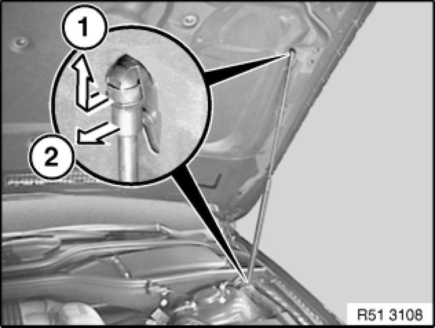

Removing and Installing/Replacing Left or Right Gas Strut for Engine Bonnet/Hood
51 23 265 - Removing and installing/replacing left or right gas strut for engine bonnet/hood

Warning!
Risk of injury and damage!
For the following tasks, you must take the appropriate measures to support the engine bonnet/hood.
As an alternative, you can enlist the help of a second person to hold the bonnet/hood.

Raise bonnet/hood lid.
Removing gas spring strut at top and bottom:
1. Push retainer spring to end of gas spring strut.
2. Remove gas spring strut from ball head.